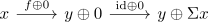

fiber / cofiber detects zero map in a stable category
Proposition
Let $\mathcal{C}$ be a stable category and $f: x \rightarrow y$ a map.
TFAE:
- $f$ is the zero morphism
- the cofiber of $f$ is given by $y \xrightarrow{\mathrm{id} \oplus 0} y \oplus \Sigma y$
- the fiber of $f$ is given by $\Omega y \oplus x \xrightarrow{0 \oplus \mathrm{id} } x$.
Proof
1) $\implies$ 2)
clear
2) $\implies$ 3)
observe that by assumption

is an exact sequence.
But the fiber of $y \oplus 0 \xrightarrow{\mathrm{id} \oplus 0} y \oplus \Sigma x$ is given by $0 \oplus x \xrightarrow{0 \oplus 0} y \oplus 0$, as the sum of exact sequences is again exact. (cf. exact sequence and direct sum) Moreover, the map $x \rightarrow y$ is unique up to automorphism, as different choices
1) $\iff$ 3)
follows dually.